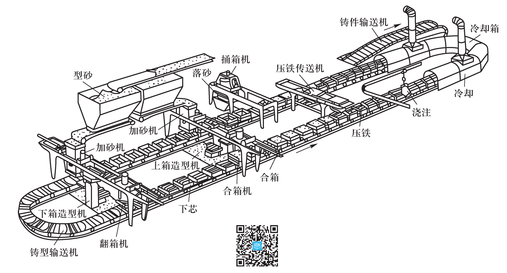
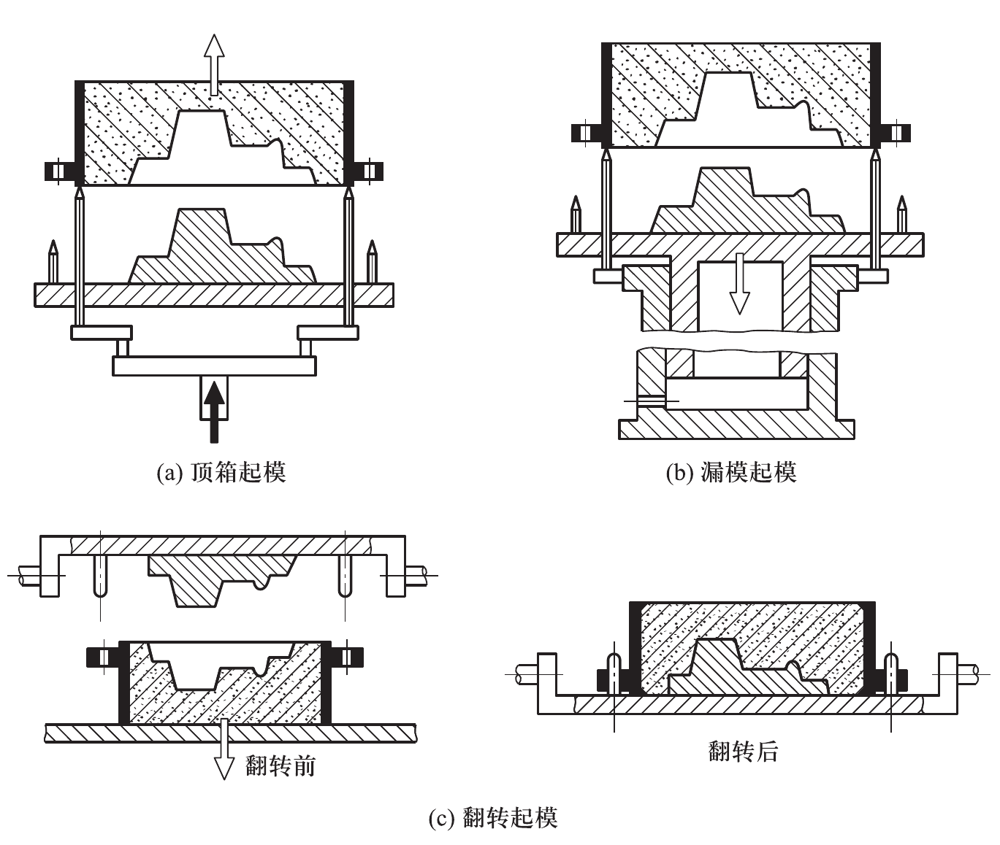
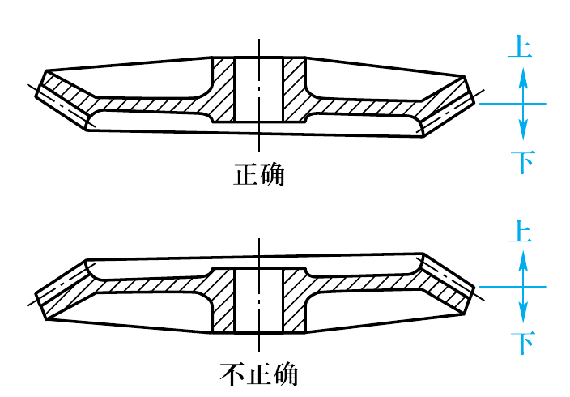
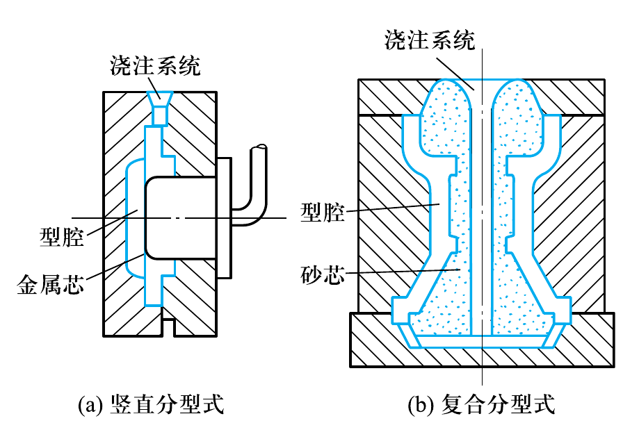
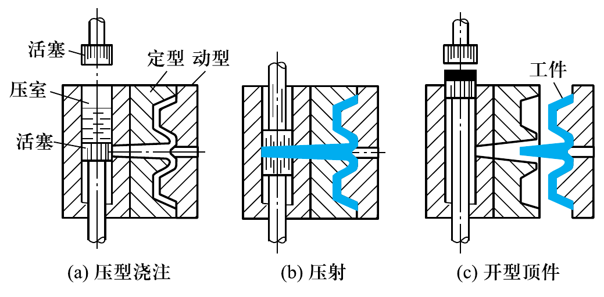
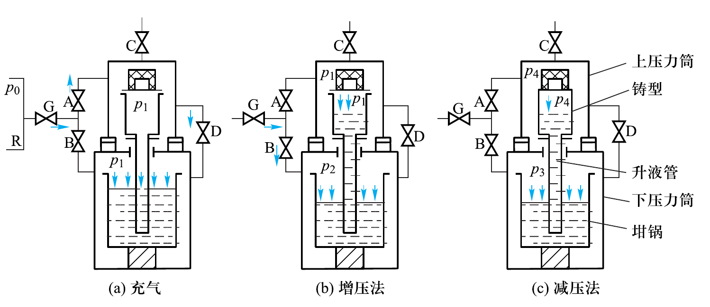
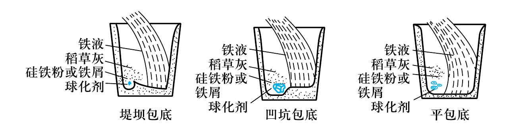
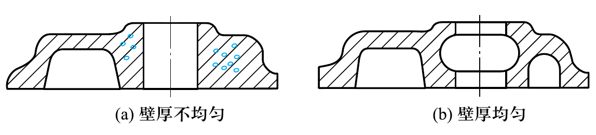
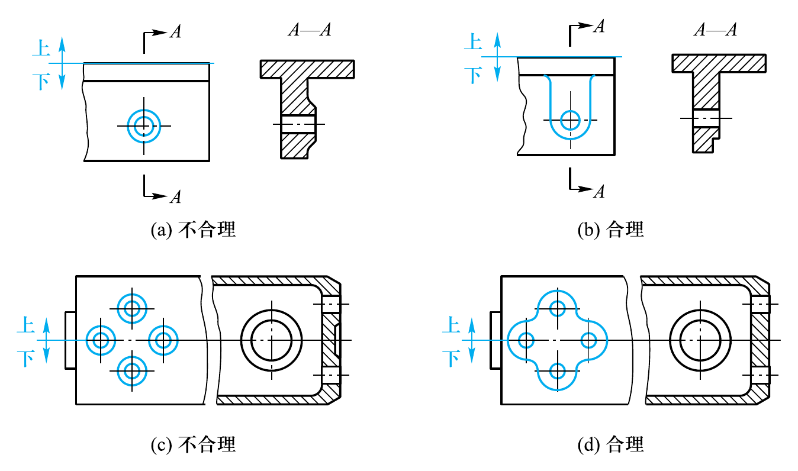

CHAPTER 07
铸造
工程材料与机械制造基础（第3版）
●
液态金属成形理论基础
液态金属成形理论基础
液态合金的充型能力
- 流动性：液态合金填充铸型的能力
- 流动性好 → 获复杂薄壁铸件，利于排气补缩
- 流动性差 → 冷隔、浇不足、气孔、夹渣、缩孔
- 测量方法：螺旋形试样，越长流动性越好
- 影响因素：合金成分、物理性质、温度、杂质和气体
- 纯金属和共晶合金流动性最好（恒温凝固）

液态金属成形理论基础
铸造合金的收缩
- 收缩：合金冷却时体积或尺寸缩小
- 三阶段：液态收缩 → 凝固收缩 → 固态收缩
- 液态收缩+凝固收缩 → 缩孔（集中）和缩松（分散）
- 固态收缩 → 内应力、变形和裂纹
- 防止缩孔：顺序凝固 + 冒口 + 冷铁

液态金属成形理论基础
铸造内应力及铸件的变形、裂纹
- 内应力 = 热应力（壁厚不均）+ 机械应力（铸型阻碍）
- 厚壁/心部受拉伸，薄壁/表层受压缩
- 防止变形：同时凝固、反变形法、去应力退火
- 热裂：高温沿晶界产生，短而曲折，常见于铸钢和铝合金
- 冷裂：低温直线状裂缝，控制磷含量可预防

●
砂型铸造
砂型铸造
砂型铸造的生产过程及特点
- 工艺流程：零件图→铸件图→模样→造型→合箱→浇注→落砂→清理→检验
- 优点：适应性强、成本低、适用范围广
- 缺点：一型一次使用、粉尘污染、精度低

砂型铸造
砂型铸造工艺简介
- 手工造型：整模、分模、挖砂、活块、三箱、刮板、假箱、地坑
- 机器造型：振压紧实、抛砂紧实、射砂紧实
- 起模方法：顶箱（浅腔）、漏模（深腔）、翻转（复杂腔）
- 浇注原则：'高温出炉、低温浇注'

砂型铸造
铸造工艺图
- 浇注位置：重要加工面朝下，厚壁部分朝上（便于补缩）
- 分型面：选在最大截面，尽量一个分型面
- 主要工艺参数：收缩率、加工余量、起模斜度、铸造圆角
- 芯头：定位和固定型芯；最小铸出孔12~50mm

●
特种铸造
特种铸造
熔模铸造（精密铸造）
- 工艺：压蜡模→结壳→脱蜡→焙烧→浇注
- 精度高：IT14~IT11，Ra 1.6~12.5μm
- 适用：涡轮叶片、高速钢刀具等复杂精密小件

特种铸造
金属型铸造
- 金属型可反复使用（'一型多铸'）
- 措施：预热、排气、喷涂料、尽早开型
- 适用：大批量非铁金属件（铝活塞、气缸体、铜轴瓦）

特种铸造
压力铸造
- 两大特点：高压 + 高速充型
- 精度IT13~IT11，最小壁厚0.5mm
- 生产效率最高（班产600~700件）
- 缺点：设备投资大，卷气→不能热处理

特种铸造
离心铸造
- 原理：高速旋转、离心力充型
- 省型芯/浇冒口，组织致密，可铸双金属件
- 缺点：内表面质量差，精度不易控制
- 应用：铸铁管、气缸套、滑动轴承

特种铸造
其他铸造方法简介
- 反压铸造（压差铸造）：充型平稳，最小壁厚0.5mm
- 挤压铸造（液态模锻）：力学性能接近锻件
- 实型铸造（消失模）：泡沫塑料模，无分型面
- 磁型铸造：磁丸固结成铸型，冷却快3倍
- 气冲造型：紧实时间<0.1s，精度高无噪声

特种铸造
铸造技术的发展趋势
- 绿色集约化：低消耗、无废弃物
- 专业化、自动化、智能化生产
- 计算机和机器人应用：CAD/CAE/凝固模拟
●
常用合金铸件生产特点
常用合金铸件生产特点
铸铁件生产
- 灰铸铁：冲天炉熔炼，'高温出炉、低温浇注'
- 球墨铸铁：球化处理（稀土镁合金）+ 孕育处理
- 可锻铸铁：白口毛坯 + 高温石墨化退火
- 蠕墨铸铁：蠕化剂处理，铸造性能好

常用合金铸件生产特点
铸钢件生产
- 综合力学性能优于铸铁，强度高、韧性好、焊接性好
- 工艺难点：熔点高（~1500°C）、流动性差、收缩率大
- 型砂要求：高透气性、耐火度、退让性
- 熔炼设备：三相电弧炉为主
●
铸件结构设计
铸件结构设计
铸造性能对铸件结构的要求
- 壁厚适当：大于最小壁厚，可用加强筋
- 壁厚均匀：减小厚壁差，防热节和缩孔
- 壁连接用圆角：避免直角，防金属聚集
- 减少变形：对称结构或加强筋
- 减缓收缩受阻：弯曲或奇数轮辐

铸件结构设计
铸造工艺对铸件结构的要求
- 外形尽量简单，避免侧凹结构
- 分型面应平直，减少活块和型芯
- 以砂垛代替型芯，减少制芯成本
- 开式结构可省去型芯
- 垂直于分型面的不加工面应有结构斜度
